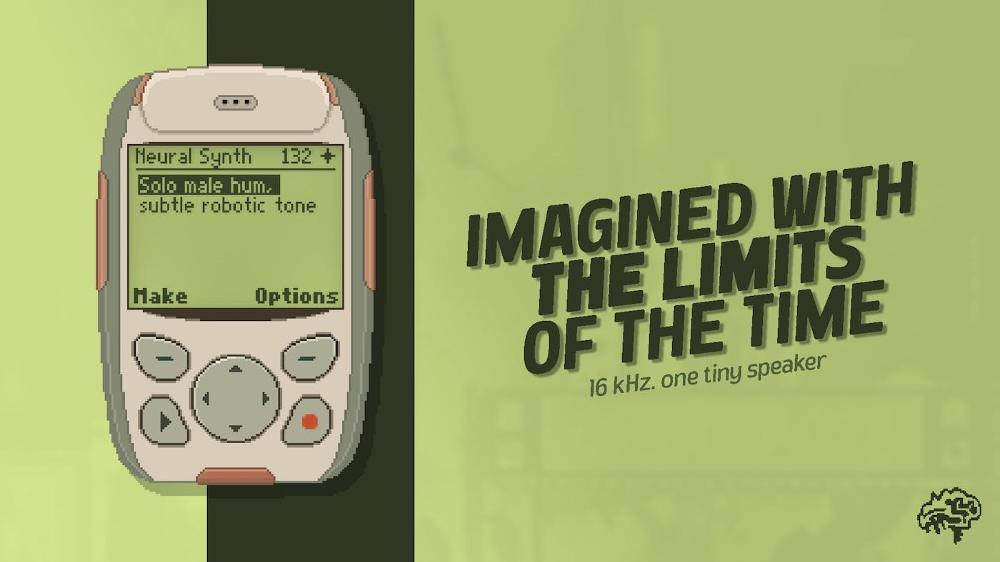

生成的是素材，不是整首歌
想给一段节奏补一个奇怪的敲击声，通常要在素材库里来回试听，或者从现有录音截取一小段。2G把文字描述放在这个找声音的环节，生成之后还留有编辑与演奏。使用者仍决定什么时候触发、用什么节奏、与哪些声音叠在一起。这种尺度适合喜欢亲手编排的人：结果不是一首已经替你做完选择的歌，而是可以继续摆弄的材料。不过文字里的“像玻璃又像鼓”没有唯一正确答案，第一次生成不合适并不奇怪。能否保留有用的部分、快速换一个方向，比一次提示语写得多精细更影响创作连贯性。
2G · 产品 · PH发现

想给一段节奏补一个奇怪的敲击声，通常要在素材库里来回试听，或者从现有录音截取一小段。2G把文字描述放在这个找声音的环节，生成之后还留有编辑与演奏。使用者仍决定什么时候触发、用什么节奏、与哪些声音叠在一起。这种尺度适合喜欢亲手编排的人：结果不是一首已经替你做完选择的歌，而是可以继续摆弄的材料。不过文字里的“像玻璃又像鼓”没有唯一正确答案，第一次生成不合适并不奇怪。能否保留有用的部分、快速换一个方向，比一次提示语写得多精细更影响创作连贯性。
团队在公开讨论中强调四声部、低采样率和会压缩共鸣的小喇叭特性。这里说的是软件塑造的音色与限制，不是购买一只带扬声器的口袋设备。声部少会影响和弦与拖尾重叠，使用者可能需要删掉装饰音、缩短尾音，或把一个音重新录成另一条素材。对有些音乐，这正好避免堆得太满；对需要宽阔层次的人，也可能很快成为障碍。复古界面容易引起第一次尝试，长期是否留下来则取决于声音在混音里能否占据清楚的位置。漂亮外壳不能证明音质，也不能替代自己的监听。
加载个人音频这一点，让采样器不只服务于“再抽一个声音”的循环。门的碰撞、手边物件或已有合成器片段都可以成为候选素材；用户需要自己确认有权使用录音。把熟悉的声音放进同一处理路径，也更容易听出工具究竟改变了哪里。比如攻击段是否变钝、尾音是否过长、连续弹奏会不会互相抢声部。这些是声音设计中的实际选择，不适合用一个“AI质量”分数替代。公开材料没有给出模型、生成延迟或商用素材许可的完整说明，因此不能承诺生成内容可直接用于任何付费项目。
插件与独立应用解决的是两种场景：前者要留在音乐工程里跟随宿主，后者适合先随手试听。PH列出两个平台和免费生成额度，但没有完成宿主兼容、工程重开或离线行为验证。要让一个音色留在作品中，保存之后能否再次打开、音高和节奏是否仍符合预期都很实际。订阅额度也不能直接换算成成品声音数量，因为被丢弃的尝试同样可能消耗额度。作者的讨论里有喜欢复古风格的回应，也有对限制的兴趣；这些不能代表长期使用或购买。先做一个自己愿意留下的短乐句，比收藏更多演示图更能说明适合与否。